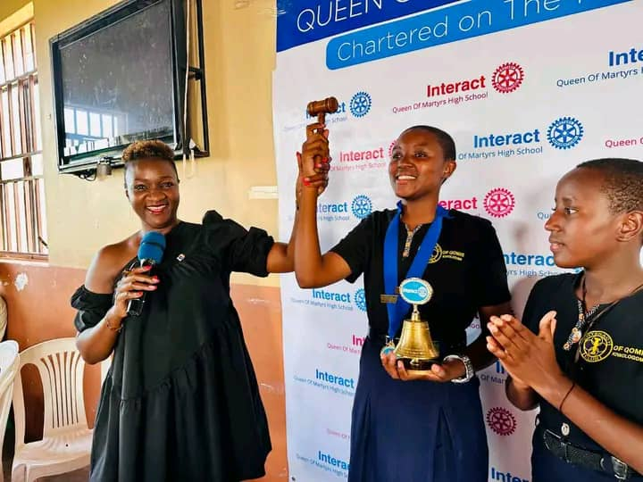

Queen of martyrs is a well organised environment that really cormfort a student to study from and to live in with adequate number of facilities that are necesserary for every a student
to excel in acaddemically and stay holistic in order to become an elite and useful material to the country
Students engange in various CO-circular activities
this helps to builds their confidence and their self-esteem levels. This confidence gained from learning drama will be very applicable in school, careers and in life!
A great moment of victoriousness At our school celebrations are really. School celebration moments are the heartbeats of our educational community, embodying the spirit of unity and achievement. From jubilant sports victories to inspiring academic accomplishments, these occasions encapsulate the hard work and dedication of our students, teachers, and staff.
Welcome to Queen of Martyrs School, a beacon of Catholic education where faith and excellence unite.
Our mission is to foster not only academic growth but also spiritual development under the guidance of our Catholic values.
We embrace the rich traditions of the Catholic Church, instilling in our students a deep sense of faith, love, and compassion.
At Queen of Martyrs, we are dedicated to nurturing a community where students grow in wisdom, grace, and moral integrity. Join us on this sacred journey
where education is a divine path, and together, we'll empower your child to shine with both knowledge and the enduring light of faith."
SCHOOL LIFESTYLE
Queen of Martyrs High School isn't just a place of education;
it's a realm where young minds are transformed into confident,
knowledgeable, and compassionate individuals. In the hallowed halls of Queen of Martyrs,
the school lifestyle is a powerful blend of academic excellence,
unwavering support from dedicated educators, and the enduring bonds of friendship.
It's a place where each student is encouraged to reach their full potential,
where dreams are nurtured, and where values of respect, integrity,
and community are instilled. Queen of Martyrs High School is a crucible of not only academic
growth but also personal and moral development, shaping the leaders of tomorrow who
will carry the school's legacy forward with pride and purpose.
SCHOOL TRIPS
A school trip at Queen of Martyrs High School is not just a journey;
it's an exhilarating adventure that enriches our education and creates memories that last a lifetime.
Whether we're exploring historical landmarks, delving into the wonders of nature,
or immersing ourselves in cultural experiences, every school trip is a gateway to learning beyond the classroom.
The Queen of Martyrs High School experience extends beyond the school's walls,
allowing us to connect with our subjects in a tangible way. These trips become the bridge between theory and reality,
fostering a deeper understanding of the world around us.
With each school trip, we not only acquire knowledge but also build friendships,
foster a sense of curiosity, and strengthen our sense of community.
Queen of Martyrs High School doesn't just educate;
it inspires a lifelong love for exploration and learning.
CHARITY GIVING
Charity giving is not just a noble endeavor at Queen of Martyrs High;
it's a core value that defines our school community.
Within the hallowed halls of Queen of Martyrs, we don't just learn about generosity and compassion;
we embody these principles. Our commitment to charity giving goes beyond mere acts of kindness;
it's a profound demonstration of our collective empathy and solidarity. Whether it's organizing food drives,
clothing donations, or fundraising events, the spirit of giving at Queen of Martyrs High unites us in a mission
to make a positive impact on the world. It's a testament to our shared values and a reflection of the school's namesake,
the martyrs who selflessly gave for a greater cause. In our charity giving, we continue their legacy, showing that
Queen of Martyrs High School isn't just a place of education; it's a sanctuary for nurturing compassionate and socially
responsible individuals who understand the true essence of giving back.
WOMEN EMPOWERMENT

Queen of Martyrs High School is a beacon of women's empowerment,
where leadership isn't just a goal; it's a way of life. Our school
doesn't merely teach about leadership; it cultivates it in every student.
Within these walls, young women are encouraged to step into their power,
lead with grace, and inspire change. Our namesake, the martyrs, exemplify the unwavering courage and
strength of women who've stood at the forefront of transformation. Queen of Martyrs High School instills in
us the belief that leadership knows no gender, and it is a platform where our voices, ideas, and ambitions are celebrated. Whether in the classroom, on the field, or in extracurricular activities, we are encouraged to take charge, innovate, and set an example for others. Our school is not just a place of education; it is a crucible where women are molded into visionary leaders who will shape a brighter, more equitable future for all. At Queen of Martyrs High School, the sky is not the limit; it's just the beginning of our journey towards empowering women to lead and transform the world.